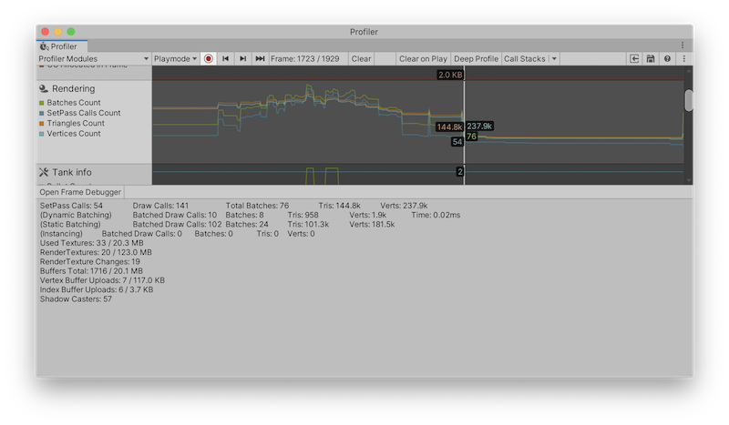

Rendering Profiler 显示有关 CPU 和 GPU 为渲染场景完成的工作的渲染统计信息和信息。您可以使用这些统计信息来衡量场景不同区域的资源强度，这对优化很有用。
该图表显示您的应用程序渲染的批次 (Batches)、SetPass 调用 (SetPass Calls)、三角形 (Triangles) 和顶点 (Vertices) 的数量。下方的面板将显示更多渲染统计信息，这些统计信息与 GameView Rendering Statistics 窗口中显示的统计信息一致。
。
Rendering Profiler 模块的图表分为四个类别：
| 图表 | 描述 |
|---|---|
| Batches Count | Unity 在一帧内处理的批次数。 |
| SetPass Calls Count | Unity 在一帧中切换用于渲染游戏对象的着色器通道的次数。一个着色器可能包含多个着色器通道，每个通道以不同的方式渲染场景中的游戏对象。 |
| Triangles Count | Unity 在一帧内处理的三角形数。 |
| Vertices Count | Unity 在一帧内处理的顶点数。 |
当您单击 Rendering Profiler 模块时，窗口下半部分的详细信息窗格会显示详细的渲染统计信息。这些统计数据类似于 Rendering Statistics 窗口中显示的内容。
在详细信息窗格的左上角，选择 Open Frame Debugger 以打开帧调试器，它为您提供有关渲染帧的各个绘制调用的信息。
这些统计信息也可通过 ProfilerRecorder API 及 Profiler Module Editor 获得，因此您可以将它们添加到自定义性能分析器模块中。
| 统计信息 | 描述 | 在发行版播放器中可访问 |
|---|---|---|
| SetPass Calls Count | Unity 在一帧中切换用于渲染游戏对象的着色器通道的次数。一个着色器可能包含多个着色器通道，每个通道以不同的方式渲染场景中的游戏对象。 | 是 |
| Draw Calls Count | Unity 在一帧内发出的绘制调用总数。Unity 在将游戏对象渲染到屏幕时发出绘制调用。这个数字包括非批量绘制调用以及动态和静态批量绘制调用。 | 是 |
| Total Batches Count | Unity 在一帧内处理的批次总数。这个数字包括静态和动态批次。 | 是 |
| Triangles Count | Unity 在一帧内处理的三角形数。 | 是 |
| Vertices Count | Unity 在帧期间处理的顶点数。 | 是 |
| (Dynamic Batching) | 本部分包含有关动态批处理的统计数据。 | 否 |
| Dynamic Batched Draw Calls Count | Unity 合并为动态批次的绘制调用数。 | 否 |
| Dynamic Batches Count | Unity 在帧期间处理的动态批次数。 | 否 |
| Dynamic Batched Triangles Count | 动态批次中包含的游戏对象中的三角形数。 | 否 |
| Dynamic Batched Vertices Count | 动态批次中包含的游戏对象中的顶点数。 | 否 |
| Dynamic Batching Time | Unity 创建动态批处理结构所花费的时间。 | 否 |
| (Static Batching) | 本部分包含有关静态批处理的统计数据。 | 否 |
| Static Batched Draw Calls Count | Unity 合并为静态批次的绘制调用数。 | 否 |
| Static Batches Count | Unity 在一帧内处理的静态批次数。 | 否 |
| Static Batched Triangles Count | 静态批次中包含的游戏对象中的三角形数。 | 否 |
| Static Batched Vertices Count | 静态批次中包含的游戏对象中的顶点数。 | 否 |
| (Instancing) | 本部分包含有关 GPU 实例化的统计数据。 | 否 |
| Instanced Batched Draw Calls Count | Unity 合并为实例化批次的绘制调用数。 | 否 |
| Instanced Batches Count | Unity 在一帧内渲染实例化游戏对象的处理批次数。 | 否 |
| Instanced Batched Triangles Count | 实例化游戏对象中的三角形数。 | 否 |
| Instanced Batched Vertices Count | 实例化游戏对象中的顶点数。 | 否 |
| Used Textures Count Used Textures Bytes |
Unity 在帧期间使用的纹理数以及纹理使用的内存量。 | 否 |
| Render Textures Count Render Textures Bytes |
Unity 在帧期间使用的 RenderTextures 数以及 RenderTextures 使用的内存量。 | 是 |
| Render Textures Changes Count | Unity 在帧期间将一个或多个 RenderTextures 设置为渲染目标的次数。 | 是 |
| Used Buffers Count Used Buffers Bytes |
所使用的 GPU 缓冲区和内存的总数。这包括顶点、索引和计算缓冲区以及渲染所需的所有内部缓冲区。 | 是 |
| Vertex Buffer Upload In Frame Count Vertex Buffer Upload In Frame Bytes |
CPU 在帧中上传到 GPU 的几何体数量。这代表顶点/法线/ texcoord 数据。GPU 上可能已经有一些几何体。此统计信息仅包括 Unity 在帧中传输的几何体。 | 是 |
| Index Buffer Upload In Frame Count Index Buffer Upload In Frame Bytes |
CPU 在帧中上传到 GPU 的几何体数量。这表示三角形索引数据。GPU 上可能已经有一些几何体。此统计信息仅包括 Unity 在帧中传输的几何体。 | 是 |
| Shadow Casters Count | 在一帧中投射阴影的游戏对象的数量。如果一个游戏对象投射多个阴影（因为多个光源照亮它），该对象投射的每个阴影都有一个条目。 | 是 |
Rendering 模块的 Profiler 计数器也可在播放器中使用。使用 ProfilerRecorder API 访问播放器中的 Render Profiler 模块信息。发行版播放器中还提供了高级计数器。
以下示例包含一个简单的脚本，该脚本收集“SetPass Calls Count”、“Draw Calls Count” 和 “Vertices Count”指标并将其显示为 TextArea。
using System.Text;
using Unity.Profiling;
using UnityEngine;
public class RenderStatsScript : MonoBehaviour
{
string statsText;
ProfilerRecorder setPassCallsRecorder;
ProfilerRecorder drawCallsRecorder;
ProfilerRecorder verticesRecorder;
void OnEnable()
{
setPassCallsRecorder = ProfilerRecorder.StartNew(ProfilerCategory.Render, "SetPass Calls Count");
drawCallsRecorder = ProfilerRecorder.StartNew(ProfilerCategory.Render, "Draw Calls Count");
verticesRecorder = ProfilerRecorder.StartNew(ProfilerCategory.Render, "Vertices Count");
}
void OnDisable()
{
setPassCallsRecorder.Dispose();
drawCallsRecorder.Dispose();
verticesRecorder.Dispose();
}
void Update()
{
var sb = new StringBuilder(500);
if (setPassCallsRecorder.Valid)
sb.AppendLine($"SetPass Calls: {setPassCallsRecorder.LastValue}");
if (drawCallsRecorder.Valid)
sb.AppendLine($"Draw Calls: {drawCallsRecorder.LastValue}");
if (verticesRecorder.Valid)
sb.AppendLine($"Vertices: {verticesRecorder.LastValue}");
statsText = sb.ToString();
}
void OnGUI()
{
GUI.TextArea(new Rect(10, 30, 250, 50), statsText);
}
}
Rendering Profiler 模块信息属于 ProfilerCategory.Render 性能分析器类别。
如果要在自定义模块中突出显示选定的渲染计数器，请使用 Module Editor 配置图表及详细视图。